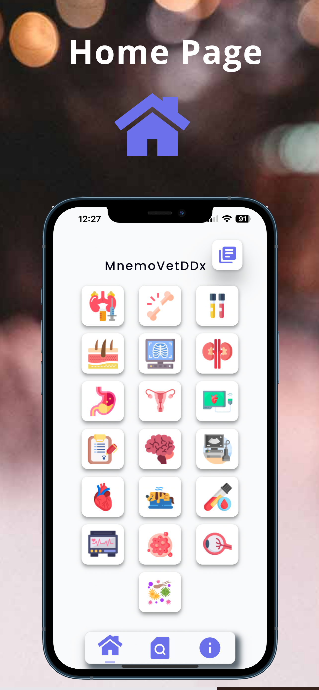
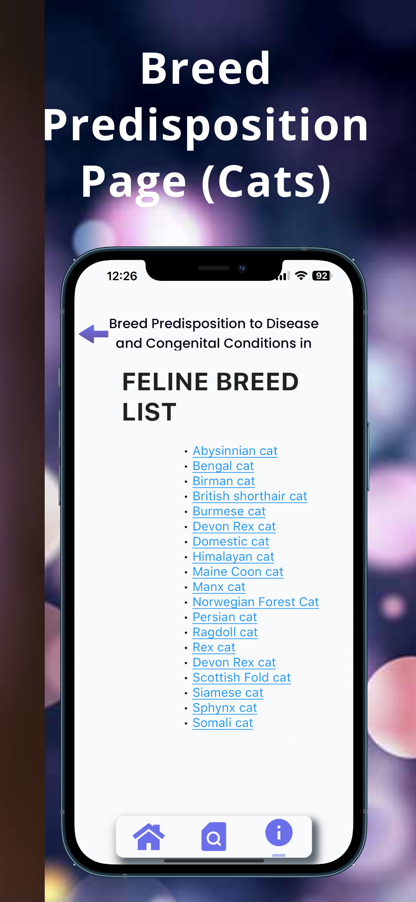
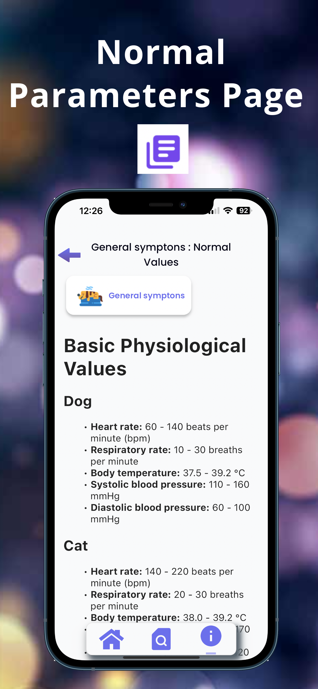
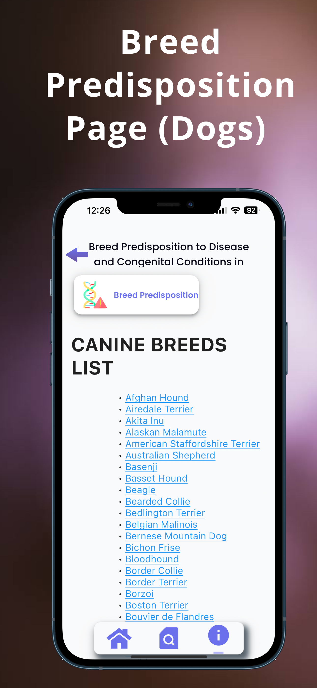
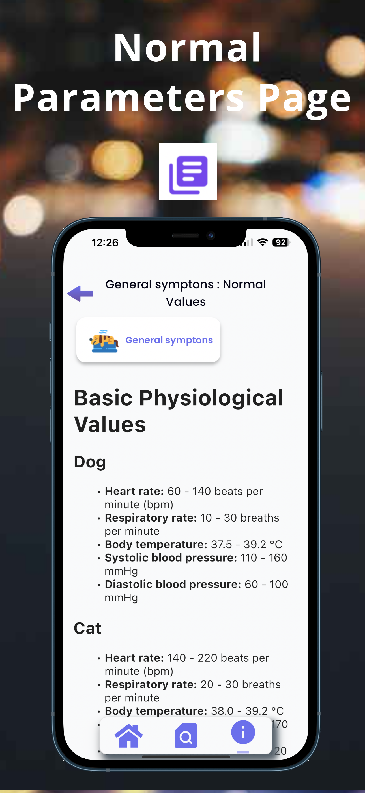
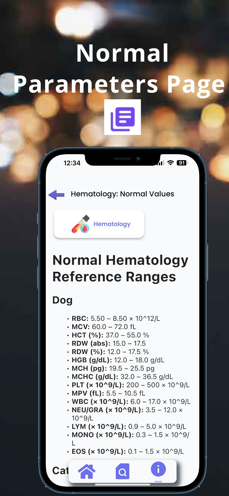
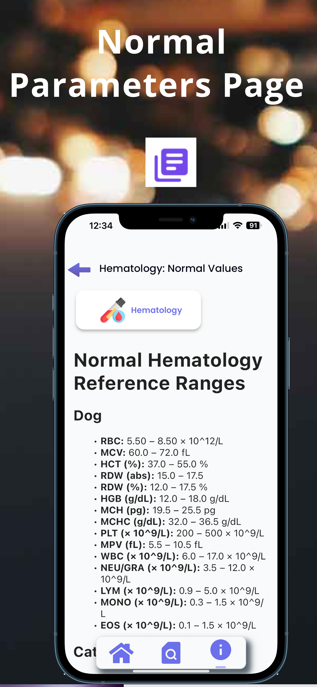
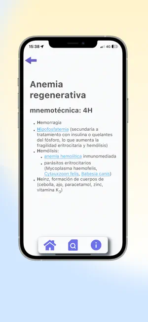

MnemoVetDDx App
Esta aplicación diseñada con el objetivo de mejorar la manera en la que estudiantes de veterinaria y veterinarios clínicos en ejercicio abordan los desafíos diagnósticos en medicina interna de pequeños animales. Con un enfoque basado en reglas mnemotécnicas, hacemos el aprendizaje de diagnósticos diferenciales más eficiente y agradable.
Características clave:
- Aprendizaje Eficiente con Reglas Mnemotécnicas: Nuestro enfoque único en reglas mnemotécnicas hace que aprender diagnósticos diferenciales sea más eficiente y agradable. Desde acrónimos concisos hasta palabras inventadas fáciles de recordar, proporcionamos herramientas que le ahorran tiempo y esfuerzo en la práctica clínica.
- Listas Comprensivas de Diagnósticos Diferenciales: Acceda a listas concisas y actualizadas de diagnósticos diferenciales organizadas por especialidades veterinarias, asegurando que tenga la información más reciente al alcance de su mano.
- Navegación Intuitiva: Encuentre rápidamente síntomas, procesos patológicos y sus correspondientes diagnósticos diferenciales a través de un menú principal fácil de usar, dividido por sistemas o especialidades, cubriendo todo, desde ecografía abdominal hasta traumatología.
- Consejos Prácticos Invaluables: Descubra un compendio de "perlas" prácticas, esos consejos difíciles de encontrar que son invaluables en la práctica veterinaria.
Novedades:
En la última versión, la sección de diagnóstico general ahora incluye una lista completa de enfermedades y condiciones genéticas a las que varias razas de perros y gatos son propensas. Además, se han añadido nuevos diagnósticos diferenciales y se ha actualizado la información en la sección de parámetros normales y valores fisiológicos.
Para ver la app en acción y conocer más sobre su funcionamiento, visita el siguiente enlace:
Galería de Imágenes








Descarga la app
Versión en Inglés